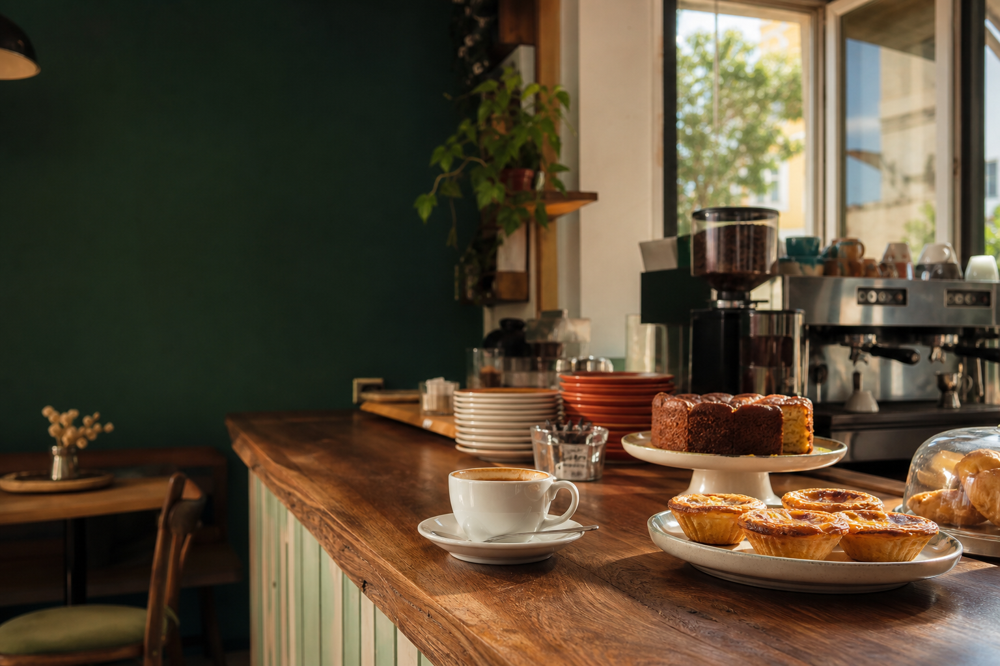

RESERVA O TEU MOMENTO
Agendamento
Escolhe o serviço, a data e a hora. A tua mesa fica à nossa espera.

Um momento só teu
Pequeno-almoço, bolos caseiros ou uma conversa acompanhada por café especial.
RESERVA O TEU MOMENTO
Escolhe o serviço, a data e a hora. A tua mesa fica à nossa espera.

Pequeno-almoço, bolos caseiros ou uma conversa acompanhada por café especial.